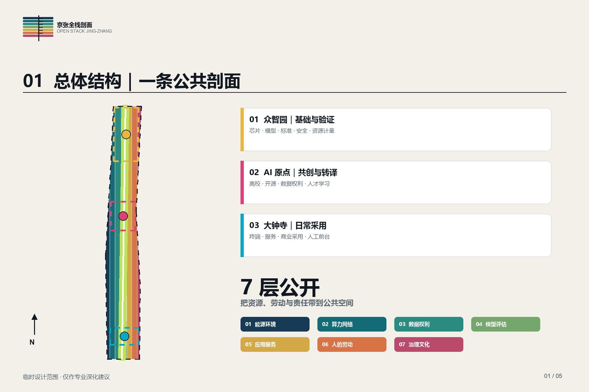
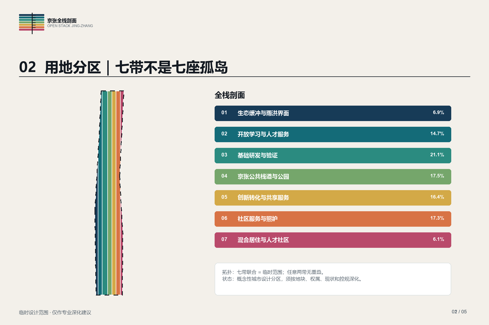
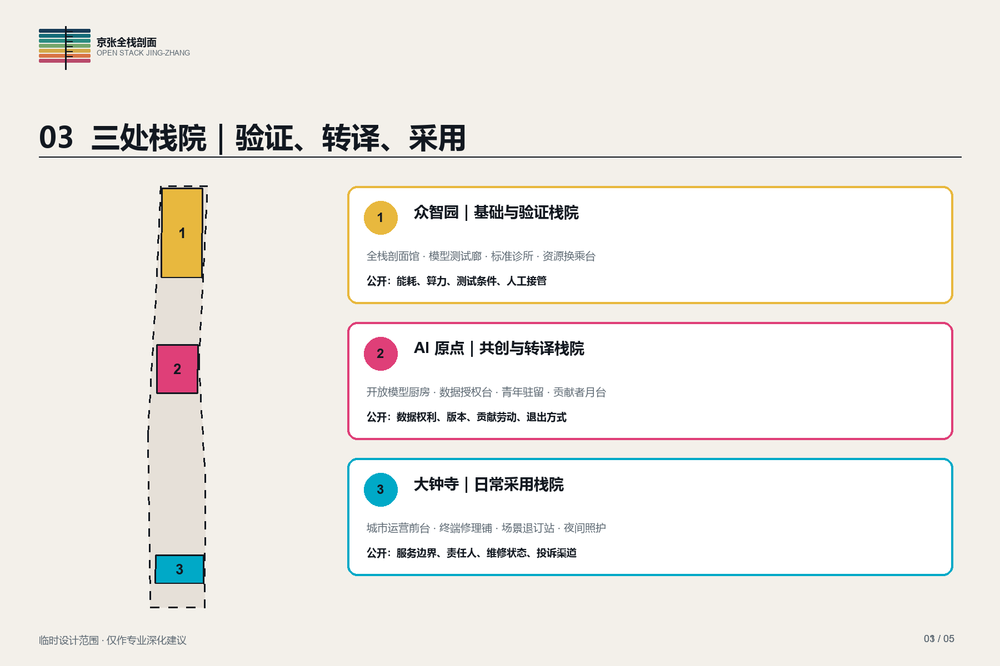
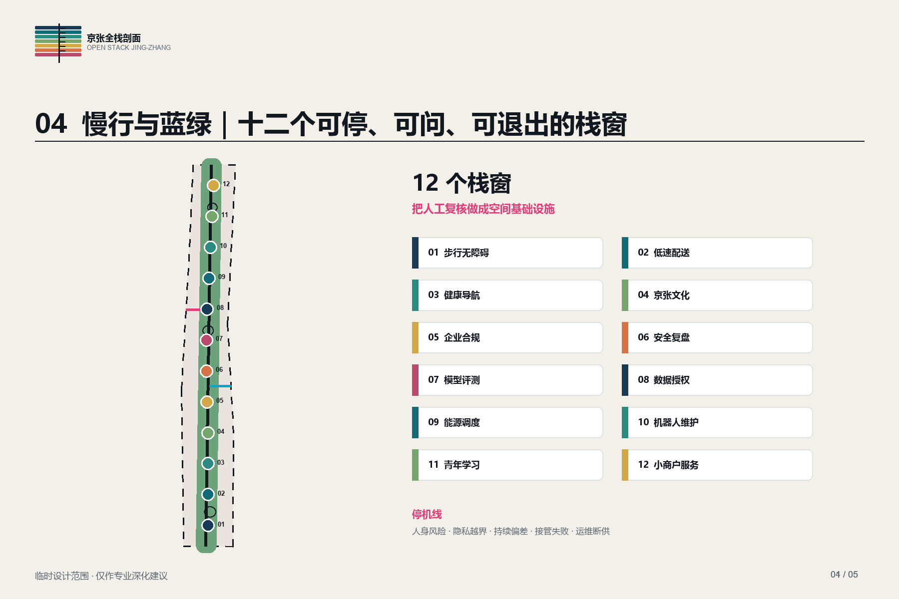
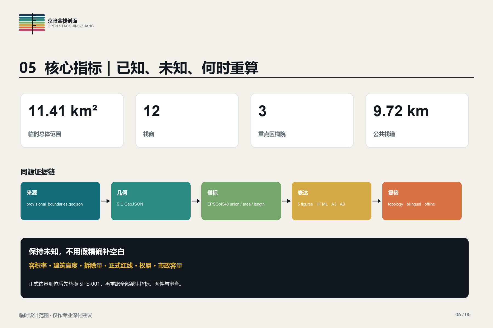

本页可离线打开。总体范围与三处重点区为仓库提供的临时粗略代理，所有空间建议均需专业深化。
11.41 km²site_area_sqm · provisional
13.80%green_ratio · conceptual
1.08%public_space_ratio · conceptual
12stack windows · human review
总览地图 / OVERVIEW MAP三层范围 / THREE-LEVEL SCOPE重点区域 / KEY AREAS用地分区 / LAND USE交通慢行 / MOBILITY蓝绿公共空间 / BLUE-GREEN PUBLIC SPACE建筑 / BUILDINGS更新项目 / RENEWAL PROJECTSAI 场景 / AI SCENARIOS核心指标 / CORE METRICS任务覆盖 / TASK COVERAGE自检状态 / SELF-CHECK来源 / SOURCES假设 / ASSUMPTIONS

总体结构与七层公开栈

用地分区与全栈剖面

三处栈院详细框架

慢行、蓝绿与十二个栈窗

指标与证据链
更新项目与分期
一期：公开最小栈 · 二期：三处栈院联动 · 三期：全带运营与年度审计
自检状态
来源可追溯 · 几何同源 · 指标可复算 · 中英文成对 · 无远程资源